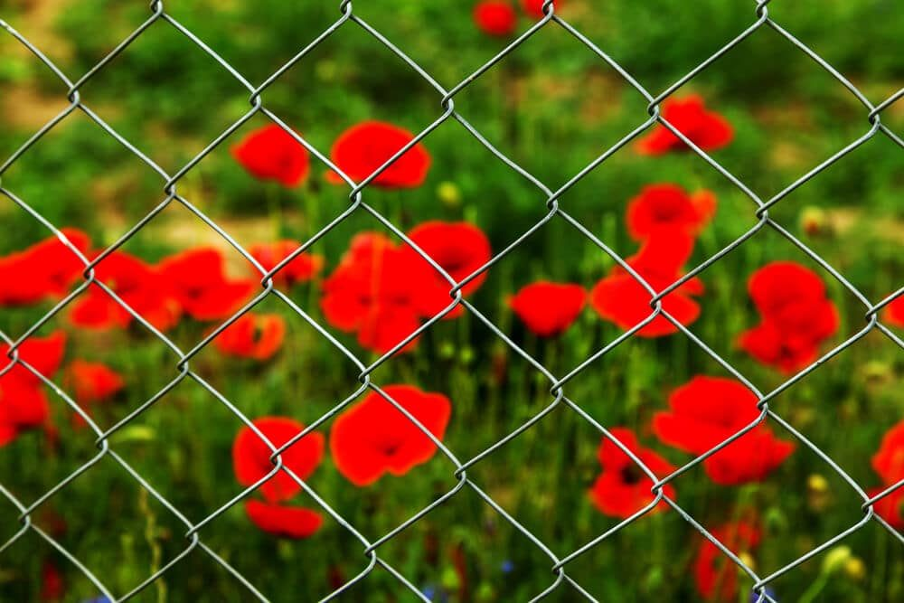

In This Guide
- Chain link is one of the oldest and most popular fence materials, and modern coatings have made it far more attractive and long lasting.
- The seven features covered are looks, security, gates, safety for kids and pets, privacy add-ons, visibility, and durability.
- Vinyl and polymer coatings cut upkeep, fight rust, and stand up to salt air and sun better than bare wire.
- Privacy slats, windscreens, and plants can turn an open chain link fence into a screened yard.
A fence is one of the most important parts of a property. It sets boundaries, keeps people and pets safe, and shapes how the whole yard looks. Among the many materials you can pick from, chain link is one of the oldest and most popular, and it earns that spot with low cost, easy installation, and flexibility.
Old myths about chain link still circulate, but modern versions have moved well past them. Here are seven features that make chain link fences a smart choice for residential fencing, from the team at Big Easy Fence.
What Makes a Chain Link Fence
Chain link goes by many names, including wire netting, wire-mesh fence, chain-wire fence, cyclone fence, diamond-mesh fence, and hurricane fence. The signature zig-zag weave looks clean on its own, and the open design lets in sunlight and fresh air. It is budget-friendly and works at homes and businesses alike.
Seven Features Worth Knowing
These are the qualities that stand out most about chain link.
1. Chain Link Looks Better Than You Expect
Older chain link fences rusted and looked worn. Modern ones come with protective coatings that extend their life and improve their looks, including:
- Vinyl or PVC coating. Adds color, and it cuts maintenance to almost nothing.
- Polyester coating. Another colored finish that protects the wire.
- Metallic coating. Galvanized, aluminized, or galfan finishes protect the steel underneath.
A vinyl-coated fence is a good fit if you have pets and children or need to fence a large area. You can dress it up further with privacy slats in black, green, brown, tan, gray, and other colors, or by training climbing vines along the wire. Stylish post caps add a finishing touch.
2. Chain Link Adds Security
Yes, chain link can be climbed, as movies love to show. So can other fences. What chain link has in its favor is visibility, which lets cameras, lights, and neighbors see anyone who does not belong. Schools, warehouses, storage yards, and utility sites use it for that reason.
To improve security, ask your installer about these details:
- Concrete footers. A solid base makes it harder for anyone to dig underneath.
- Heavier wire gauge. Thicker wire is harder to cut.
- Height and specifications. A fence 6 feet or taller with thicker wire gives more protection, within local height limits.
3. Chain Link Gates Are a Big Plus
A gate is easy to add to a chain link fence, and it gives you convenient access for people and vehicles. If you need remote entry, chain link gates can be fitted with automatic gate operators and access controls.
4. Chain Link Is Kid and Pet Friendly
A vinyl-coated fence has a smooth finish, and a capped top rail cuts down on sharp edges. That is one reason you see chain link around playgrounds, parks, sports fields, and backyards where kids and pets play.
5. Chain Link Can Be Made More Private
Chain link gives you both open views and some seclusion. If you want a fully private yard, you can add features such as:
- Privacy slats. Woven into the mesh, they block sight lines in a range of colors.
- Windscreens. A black or green screen on a vinyl-coated fence blends into the landscape.
- A taller fence. Go higher only within your area's fencing rules.
6. Chain Link Keeps the View Open

You can see out through chain link as easily as you can see in. That is helpful for security, and it also lets you enjoy a garden, a lake, or a skyline beyond the fence. The open weave passes sunlight to a garden and lets summer breezes through the yard, and it lets strong wind pass through rather than pushing against a solid panel.
7. Chain Link Is Built to Last
Galvanized chain link carries a protective zinc layer, and that makes it water resistant and resistant to rust. Polymer-coated fabric adds strong corrosion protection, which helps in salt-heavy air near the coast. Colored vinyl coatings are also UV stable, so they resist fading.
Choosing a Coating
The finish you choose sets how the fence looks and how it ages, so it is worth a few minutes of thought.
| Coating | Best For | Good to Know |
|---|---|---|
| Vinyl or PVC | Pets, kids, large areas | Low upkeep and color choices |
| Polymer Coated | Humid or salt-heavy air | Strong corrosion resistance |
| Galvanized | Basic, budget-friendly fencing | Zinc layer protects against rust |
If your fence will sit close to the coast or in a shady, damp corner of the yard, lean toward a polymer or vinyl coating. Bare galvanized wire works well in drier, sunnier spots, and it costs less. Ask your installer to show you samples so you can compare the colors and thickness in person.
Is Chain Link Right for You?
Chain link stays popular because it delivers good value, strong visibility, and solid durability. It is not the best choice if total privacy is your goal, but with slats, screens, or plants it can come close. If you already own one, these ideas for upgrading a chain link fence are worth a look. Either way, a fence company can price a few coating and height options for your yard.
Thinking About Chain Link?
Tell us about your yard and what the fence needs to do, and we will help you find a coating, height, and layout that fit.